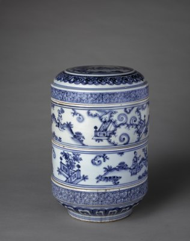

发布者：故宫博物院发布日期：20##-##-##阅读数：324
值此秋高气爽的美好时节，我们迎来了由故宫博物院和景德镇市人民政府联合主办的明代御窑瓷器系列展之三一“景德镇御窑遗址出土与故宫博物院藏传世治、正德瓷器对比展”在故宫博物院斋宫展厅隆重开幕，我谨代表故宫博物院向展览的顺利举办表示热烈说贺!向为本次活动付出心血的双方工作人员致以诚挚的谢意!本展览系在双方合作于2015 年和2016 年分别成功举办"明代彻瓷器一景德镇窑遗址出与故官博物院藏传世武、永乐宣德瓷照对比展”“明代御密瓷器一景德镇御窑遗址出土与故宫博物院藏传世成化瓷器对比展”后，隆重推出的又一个大型专题瓷器展。

2014年故官博物院与景德镇市人民政府签署了合作框架协议，协议涉及的合作内容很多，其中之一就是合作举办“代彻窑瓷器”对比系列展。展览旨在通过将明代景德镇陶厂或御器厂遗址出土的落选品修复件或残片标本)与故官博物院收藏品以对比的方式进行展示，以较全面地反映明代御窑瓷器所取得的高度艺术成就，为观众朋友提供一个全面了解明代景德镇御窑烧造瓷器品种和欣赏标准器的机会。早在20 世纪70 年代，位于今景德镇市珠山的明代御窑遗址已零星出土过一些明代御密瓷器残片。80 年代以来，景德镇市陶瓷考古研究所配合基本建设工程对明代彻密遗址进行过多次局部考古发掘，取得丰硕成果，出土的数以吨计的御窑瓷片标本成为研究明代御窑生产制度和烧造瓷器品种的珍贵实物资料，在国内外学术界产生广泛影响。
随着对出土瓷片标本的不断修复、展示和出版，人们发现其中有大量瓷器能与传世品相互印证，而且寄希望于能看到将传世品与出土物进行对比展示，故宫博物院是在明、清两代皇家建筑及其收藏品其础上建立的中国最大的综合性博物馆，所藏明代御窑瓷器不但教量多，而目质是精，与是德镇市人民政府联合举办传世与出土御窑瓷器对比展，可谓珠联壁合。举办这样的展览，也是计分离数百年的瓷器能够再聚首.
